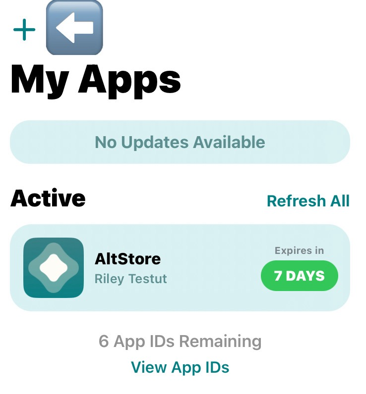
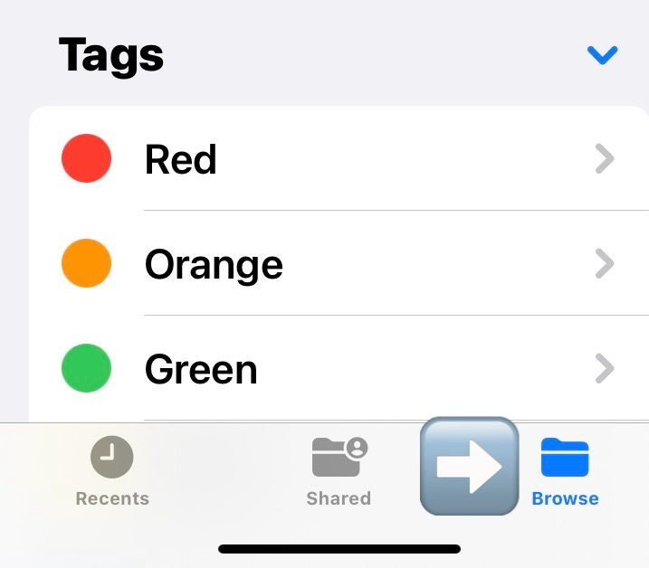
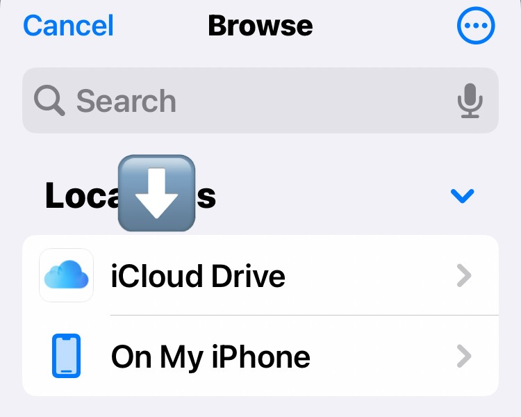
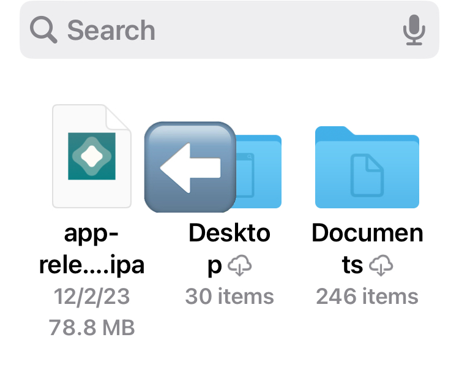
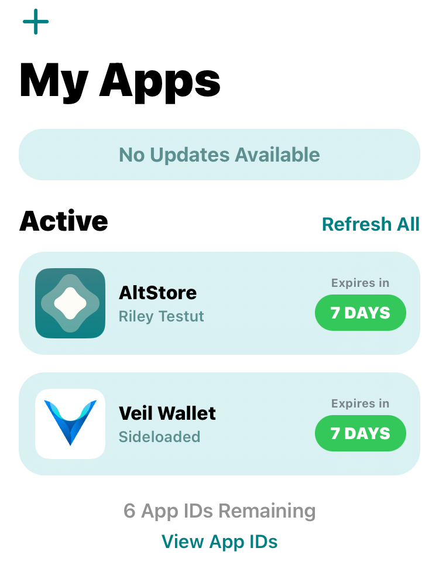

For this guide I'm using an Apple mac mini M1 machine that is currently running Sonoma 14.1.2
I'm also using an iPhone 11 running iOS 17.2.
Things may vary with different operating systems and versions of macOS and iOS.
This guide is for wallet version 1.0.7 or greater.
Requirements:
An iPhone and computer with AltStore installed.
A stable internet connection.
Downloading the Veil Light Wallet:
Visit GitHub to obtain the latest version of the light wallet here.
For iOS it Should look like this:
Download the IPA file to your computer.
In this demonstration I'm moving the IPA file to my iCloud on my mac.
Sideloading Process:
Open AltStore on your computer and ensure your iPhone is connected. Be sure to check if your phone is actually connected to
AltStore on your computer.
After verifying connection. Open AltStore on your phone and Select My Apps, and click on the "+" icon in the left upper side of the menu.
Look and find the Veil Light Wallet IPA file you downloaded.

Press the plus sign icon.
If you did not store the IPA in iCloud. Find the Light Wallet IPA where you stored it and go to step 5.
If you stored your IPA in the iCloud.
Looks towards the bottom right. Find and press browse.

Press the browse file icon.
Then look for and press the iCloud Drive.

Press iCloud Drive file location.
Then you should be able to see and select the IPA file.
Select the IPA file.

IPA file should look like this.
AltStore should begin to sideload the Veil Light Wallet onto your iPhone.
The Veil Light Wallet should now be in your My Apps tab and availble on your iPhone.

Light wallet added to My Apps.
Launching Veil Light Wallet:
Press the Veil icon to open the Veil Light Wallet on your iPhone. It should be available on you homescreen.
Configure any initial settings, such as language.
Ensure you record and securely store your seed phrase generated during the setup.
You can also enter a seed Phrase from a previous Veil wallet.
After entering your wallet phrase correctly let your wallet load.
The wallet should be ready to use in a few seconds up to a 1/2 hour.
Note that since Veil is private by default, this light wallet uses RingCT.
Basecoin and CT will not be usable, visible, or available with this light wallet.
Mining and Staking is not available with the Light Wallet.
The light wallet uses "sv1" addresses not "bv1" basecoin addresses.
Updating the Wallet:
Periodically check for updates on the official Veil website, discord, or GitHub.
Repeat the sideloading process with AltStore to install the latest version.
Note: You need to refresh or update your Veil Light Wallet and AltStore every 7 days.
To do this just plug your phone into your computer and have AltStore open on your computer.
Then on your phone open AltStore. Go to My Apps and simply press "Refresh All".
Trust Developer Certificate:
On your iPhone, go to Settings > General > Device Management.
Under "Developer App," find and tap on the certificate associated with the Veil Light Wallet.
Tap "Trust" to enable the app.
Enhancements, Additions, or Issues:
If you encounter issues or have suggestions for improvements, contribute on the official GitHub repository: Veil Light Wallet GitHub Issues.